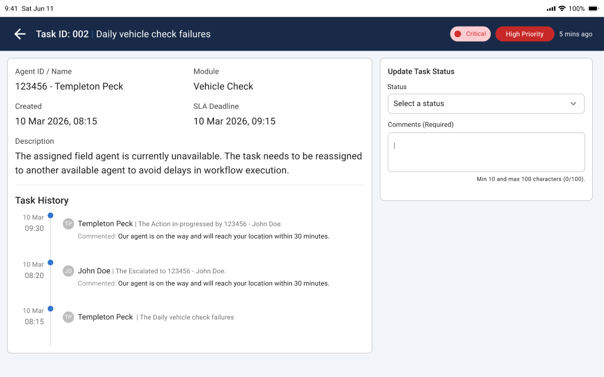
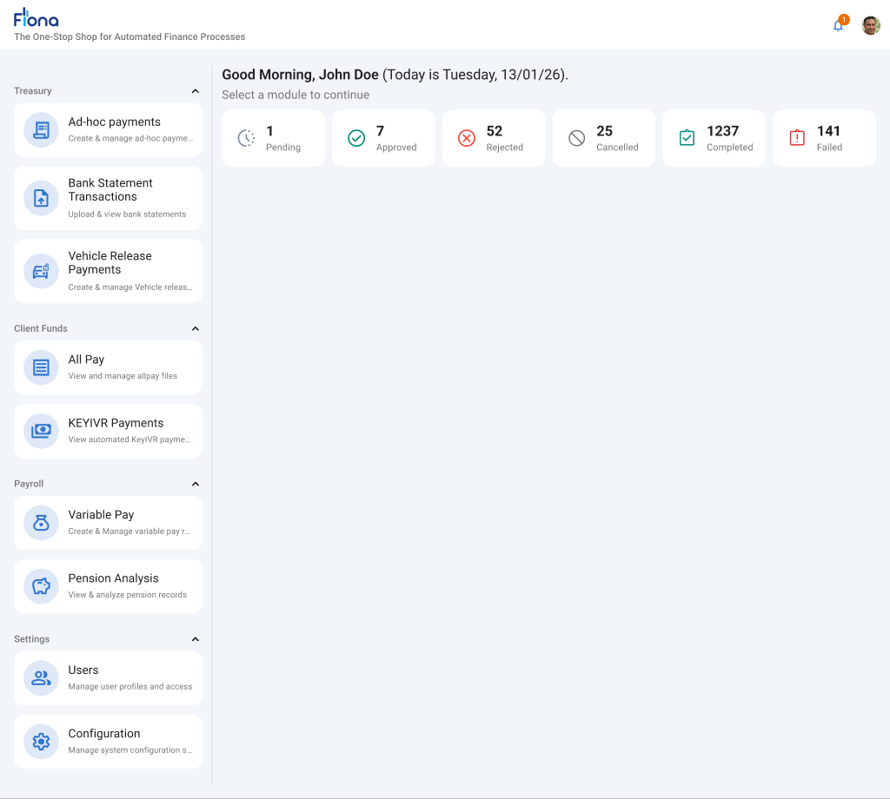

Principal UX Engineer I | Strategic UX Leadership
UX leadership portfolio focused on strategy, governance, and measurable business outcomes.
I lead end-to-end UX programs across enterprise platforms, combining research, business alignment, and delivery governance to create customer-centered experiences that scale.
Executive Profile
Arumugam V is a UX leader with a delivery profile grounded in strategic thinking, operating-model clarity, and measurable outcomes. Across enforcement operations, customer self-service, field task orchestration, internal finance automation, and AI-assisted response systems, he has led UX to improve adoption, reduce risk, and increase execution confidence across cross-functional teams.
UX Strategy
Design Thinking
Stakeholder Leadership
Design Operations
Accessibility WCAG 2.2 AA
AI-powered Experience Design
Program Visual Highlights
Selected project visuals and brand assets from production-aligned prototypes and working artifacts.



UX Manager Case Studies
Each case study below is structured using UX documentation, business requirements, research artifacts, design files, and working prototypes from the project folders.
ProServe Master EA Platform
Open Prototype- Project Overview: Enterprise platform to centralize enforcement agent records into a governed master system.
- Business Context: Four disconnected legacy systems created duplicate records, reconciliation overhead, and audit gaps.
- Customer Problem: Contract and enforcement teams could not trust profile completeness, sync status, or ownership of critical updates.
- UX Strategy: Design for role-based clarity, dual-approval compliance, and transparent integration health without cognitive overload.
- Leadership Responsibilities: Led UX framing for RBAC-heavy workflows, approval-state design, and operational adoption strategy.
- Stakeholder Collaboration: Worked across contract services, enforcement leadership, IT/security, audit, and support functions.
- Research Methodology: Persona modeling, empathy mapping, role-task analysis, and workflow decomposition.
- Key Insights: Users needed section-level control, visible status ownership, and confidence in sync outcomes per EA record.
- Experience Vision: One platform, one record, one truth with governed edits and full traceability.
- Design Process: Mapped As-Is and To-Be flows, then translated BR requirements into task-oriented interaction architecture.
- Wireframes & Prototypes: Multi-step profile workflows and approval-state interactions were validated through working HTML screens.
- Validation & Testing: UX pack included heuristic/accessibility direction and role-specific review checkpoints.
- Challenges & Decision Making: Balanced deep field-level permissions with simplicity via progressive disclosure and visual guardrails.
- Business Impact Metrics: Targeted 0 duplicate records, >=99.5% sync success, and 100% sensitive-change four-eyes compliance.
- Outcomes: Established a scalable governance model for master-data reliability and reduced exception risk.
- UX Leadership Learnings: In regulated systems, UX must operationalize policy as product behavior, not documentation.
- Future Opportunities: Add predictive data-quality alerts and proactive downstream sync anomaly insights.
Evidence reviewed


Customer App - Landing Page & Settings Module
Open Prototype- Project Overview: Customer-facing landing journey paired with an internal governed content management module.
- Business Context: High-friction assisted channels and inconsistent touchpoints reduced digital resolution effectiveness.
- Customer Problem: Citizens needed clearer stage understanding and next-step confidence under enforcement stress.
- UX Strategy: Deliver dual-track UX: simple customer journey plus Author-Reviewer-Publisher governance model.
- Leadership Responsibilities: Directed structure for role segregation, status lifecycle, and controlled publishing operations.
- Stakeholder Collaboration: Aligned compliance, business operations, content owners, product, and engineering.
- Research Methodology: Persona-led journey mapping, workflow analysis, and risk-oriented content governance review.
- Key Insights: What-you-see-is-what-you-edit parity and immutable variable integrity were critical adoption drivers.
- Experience Vision: Increase self-service confidence while giving internal teams safe, auditable content agility.
- Design Process: Converted BRD objectives into tabbed template architecture, inline editing, and stateful review workflows.
- Wireframes & Prototypes: Interactive prototype validated authoring, approval, refusal, audit, and preview behaviors.
- Validation & Testing: Defined acceptance mapping for IA/journeys with WCAG 2.2 AA and no dead-end states.
- Challenges & Decision Making: Balanced editing flexibility against legal consistency and runtime personalization safety.
- Business Impact Metrics: Targeted improved pay-now conversion, lower content-change lead time, and complete publishing traceability.
- Outcomes: Established a governed digital-content operating model with reduced dependency on engineering releases.
- UX Leadership Learnings: Governance improves speed when constraints are visible, actionable, and role-aware.
- Future Opportunities: Add controlled experimentation on CTA and support-intent journeys with analytics feedback loops.
Evidence reviewed


FieldSync Field App - Task Management & SLA Workflow
Open Prototype- Project Overview: SLA-driven task lifecycle solution for field and web users across business areas.
- Business Context: Unstructured task handling created delays, weak accountability, and inconsistent escalation behavior.
- Customer Problem: Agents lacked clear next actions while managers lacked immediate visibility of SLA risk.
- UX Strategy: Design for operational speed with mandatory accountability and transparent urgency signals.
- Leadership Responsibilities: Led requirements consolidation and translated MOM/interview findings into delivery-ready UX artifacts.
- Stakeholder Collaboration: Coordinated operations, manager/admin users, delivery teams, and field-process owners.
- Research Methodology: Interview synthesis, task analysis, workflow mapping, and heuristic review.
- Key Insights: Linear list patterns outperformed grid layouts for field users under time pressure.
- Experience Vision: Every assignee knows the next action, every manager sees risk, every action is traceable.
- Design Process: Defined status model, action taxonomy, SLA states, and role-based dashboards with filtering.
- Wireframes & Prototypes: Built task list/detail, reassignment/escalation flows, and history visibility in working prototypes.
- Validation & Testing: Focused on mandatory-comment compliance, SLA readability, and action clarity under workload.
- Challenges & Decision Making: Reduced friction from validation rules using inline guidance and strong state communication.
- Business Impact Metrics: Targeted faster at-risk task identification, fewer SLA breaches, and better delegation traceability.
- Outcomes: Delivered a structured operational model for scalable task governance and performance monitoring.
- UX Leadership Learnings: Operational UX succeeds when speed and compliance are designed as one system.
- Future Opportunities: Add workload-aware assignment recommendations and adaptive notification tuning.
Evidence reviewed


FinOps Admin Dashboard KPI Metrics
Open Prototype- Project Overview: Admin KPI dashboard to unify monitoring across finance and automation modules.
- Business Context: Oversight was fragmented across multiple sources, delaying decision-making and escalation.
- Customer Problem: Admin and operations leaders lacked a single, trustworthy view of system and workflow health.
- UX Strategy: Build an exception-first analytics experience with actionable drill-down paths.
- Leadership Responsibilities: Defined KPI hierarchy, information density strategy, and role-safe visibility model.
- Stakeholder Collaboration: Worked with finance, automation, operations managers, and engineering to align KPI definitions.
- Research Methodology: Persona and task-flow analysis with focus on bottleneck detection and reporting workflows.
- Key Insights: Decision-makers need immediate trend direction and shortest path from metric to underlying records.
- Experience Vision: Replace fragmented reporting with one dashboard that supports rapid, evidence-based intervention.
- Design Process: Structured KPI cards, filter model, trend states, and insights panels for progressive disclosure.
- Wireframes & Prototypes: Dashboard compositions and monitoring patterns were explored through staged prototype assets.
- Validation & Testing: Evaluated readability, threshold comprehension, and filter responsiveness expectations.
- Challenges & Decision Making: Balanced rich data density with cognitive load and API performance constraints.
- Business Impact Metrics: Targeted replacement of 3+ separate views and bottleneck detection time reduced from hours to seconds.
- Outcomes: Established executive-level observability baseline and clearer operational governance signals.
- UX Leadership Learnings: Dashboards create value only when they trigger fast, accountable actions.
- Future Opportunities: Add predictive anomalies and role-specific thresholds with configurable alerts.
Evidence reviewed
DocProcess Stage 3 & Stage 5 Response Generation
Open Prototype- Project Overview: AI-assisted response generation for Stage 3 and Stage 5 correspondence in ANPS workflows.
- Business Context: Manual letter assembly across systems caused inconsistency, low throughput, and quality variance.
- Customer Problem: Processing agents needed faster completion with confidence; QA needed precise edit transparency.
- UX Strategy: Use explainable AI outcomes (Green/Amber/Red) with structured human review and routing controls.
- Leadership Responsibilities: Led trust model, queue behavior, QA diff review design, and governance-ready flow alignment.
- Stakeholder Collaboration: Worked with processing teams, QA leads, workflow managers, and knowledge owners.
- Research Methodology: Requirement traceability from PBDs, role analysis, and workflow scenario mapping.
- Key Insights: Adoption depends on visible AI rationale, explicit exception handling, and reliable audit defensibility.
- Experience Vision: Shift from manual composition to assisted review where humans retain control and accountability.
- Design Process: Designed letter-generation states, review actions, QA loops, and knowledge-source dependency surfaces.
- Wireframes & Prototypes: Working screens covered correspondence authoring, mitigation exceptions, queueing, and QA review.
- Validation & Testing: Focused on diff clarity, routing correctness, confidence communication, and keyboard accessibility.
- Challenges & Decision Making: Balanced AI speed gains with policy integrity, portal dependencies, and privacy controls.
- Business Impact Metrics: Targeted reduced handling time, QA accuracy uplift, 24-hour knowledge updates, and full event auditability.
- Outcomes: Established a scalable AI-assisted operational model with explicit quality-control safeguards.
- UX Leadership Learnings: Effective AI UX leadership is governance leadership expressed through product behavior.
- Future Opportunities: Introduce confidence calibration dashboards and automated knowledge-drift detection.
Evidence reviewed

Downloadable Executive Resume
Access the executive profile document highlighting leadership journey, strategic capabilities, and enterprise UX impact.
Arumugam V - Principal UX Engineer I
Executive summary, leadership competencies, project portfolio, and strategic outcomes.
Download ResumeOpen to Senior UX Leadership Opportunities
I am available for Senior UX Manager, Principal UX Manager, Head of UX, Director of UX, and strategic design leadership roles.